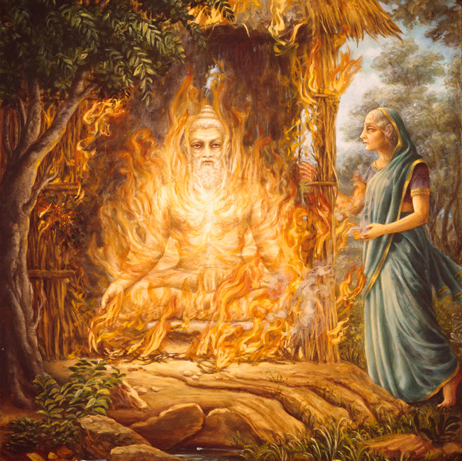

आश्रमवासिक पर्व महाभारत का पंद्रहवाँ अध्याय है। यह अध्याय उस समय की कथा कहता है जब अश्वमेध यज्ञ के बाद धृतराष्ट्र, गांधारी और कुंती सांसारिक जीवन का त्याग कर वन की ओर प्रस्थान करते हैं। यह पर्व वैराग्य, आत्मचिंतन और जीवन के अंतिम चरण में मोक्ष की ओर बढ़ने की भावना को दर्शाता है।
आश्रमवासिक पर्व महाभारत का पंद्रहवाँ पर्व है, जिसमें धृतराष्ट्र, गांधारी, और कुंती का संन्यास लेकर वनवास, विदुर की मृत्यु, नारद द्वारा आत्मा के रहस्यों का वर्णन, और अंततः धृतराष्ट्र आदि के शरीर त्याग का वर्णन मिलता है।
इस पर्व में युद्ध के बाद की शांति और वैराग्य की भावना प्रकट होती है। अब राजा और माताएं आत्मचिंतन और मोक्ष की ओर बढ़ते हैं।
युद्ध के वर्षों बाद भी धृतराष्ट्र के हृदय में गहरा पश्चाताप था। पुत्रों के विनाश का बोझ उन्हें सताता रहा। उन्होंने शेष जीवन को तपस्या और आत्मज्ञान हेतु समर्पित करने का निश्चय किया।
"अब मेरे जीवन में शेष क्या है? मेरा पुत्र, मेरा वंश – सब समाप्त। अब केवल आत्मा की मुक्ति का मार्ग ही शेष है।"
धृतराष्ट्र ने गांधारी और कुंती से परामर्श किया। तीनों ने संन्यास का निर्णय लिया। विदुर और संजय को बुलाकर युधिष्ठिर को इसकी जानकारी दी गई।
युधिष्ठिर दुःखी हुए और बोले:
"पितामह, माता! क्या मैं इतना अयोग्य हूँ कि आप मेरे राज्य में रहते हुए सुख नहीं पा सकते?"
धृतराष्ट्र ने समझाया कि यह निर्णय सांसारिक मोह के त्याग का है, न कि असंतोष का। अंततः युधिष्ठिर ने उन्हें अश्रुपूरित नेत्रों से विदा किया।
धृतराष्ट्र, गांधारी, कुंती, विदुर और संजय ने हस्तिनापुर का परित्याग किया और गंगा के तट पर स्थित एक आश्रम में वास किया।
वहां धृतराष्ट्र तपस्या में लीन रहते, गांधारी मौन साधतीं, और कुंती पूजा करती थीं। संजय सेवा करते और विदुर गहन ध्यान में डूबे रहते थे।
एक दिन युधिष्ठिर अपने भाइयों के साथ वृद्ध जनों से मिलने वन में पहुँचे। उन्होंने देखा कि विदुर एक वृक्ष के नीचे तपस्या में लीन हैं।
युधिष्ठिर ने उन्हें प्रणाम किया, और उसी क्षण विदुर ने शरीर त्याग दिया। उनकी आत्मा युधिष्ठिर में लीन हो गई।
नारद मुनि ने बताया कि विदुर वास्तव में धर्मराज के अंश थे, अतः उनकी आत्मा युधिष्ठिर में समाहित हुई।
विदुर की मृत्यु के बाद भी धृतराष्ट्र, गांधारी और कुंती वन में कठोर तपस्या करते रहे। एक दिन गंगा के तट पर अचानक भीषण अग्नि लगी। संजय ने देखा कि तीनों वृद्धजन – धृतराष्ट्र, गांधारी और कुंती – योगाग्नि के साथ उसी अग्नि में प्रवेश कर गए।
यह मृत्यु नहीं थी, यह आत्मविनाश नहीं था – यह था आत्मा की अंतिम मुक्ति का क्षण, जब व्यक्ति संपूर्ण संसार से मुक्त होकर ब्रह्म में लीन हो जाता है।
"अग्नि में प्रवेश कर वे लौकिक बंधनों से मुक्त हो गए।"
कुछ समय पश्चात नारद मुनि हस्तिनापुर आए और युधिष्ठिर को यह दुःखद समाचार दिया। उन्होंने बताया कि:
विदुर की आत्मा धर्मराज (युधिष्ठिर) में लीन हो गई।
गंगा के तट पर धृतराष्ट्र, गांधारी और कुंती ने योगाग्नि द्वारा शरीर त्याग किया।
संजय हिमालय की ओर चले गए हैं, वहाँ एक गुफा में ध्यानमग्न हैं।
युधिष्ठिर और उनके भाइयों की आँखों से अश्रुधारा बह निकली। विशेषकर भीम और अर्जुन जो कुंती के अत्यंत प्रिय थे, वे माँ को याद कर व्याकुल हो उठे।
जब युधिष्ठिर ने यह समाचार सुना, तो उन्होंने तुरंत विधिपूर्वक धृतराष्ट्र, गांधारी और कुंती के लिए श्राद्ध, तर्पण और दान का आयोजन किया।
नगर में सात दिन का सार्वजनिक शोक घोषित किया गया। ब्राह्मणों को वस्त्र, अन्न और स्वर्णदान दिया गया।
"हमारे पीछे जिनका साया था, वे अब नहीं रहे। अब हमें ही धर्म का रक्षण करना है।" – युधिष्ठिर
आश्रमवासिक पर्व जीवन के अंतिम चरण की सर्वोच्च अवस्था – त्याग और आत्मसाक्षात्कार – का दिग्दर्शन कराता है।
यह हमें सिखाता है कि:
धन, पुत्र और सत्ता क्षणभंगुर हैं – अंततः आत्मा की शांति ही शाश्वत है।
त्याग, क्षमा और ध्यान – ये जीवन के अंतिम उद्देश्य हैं।
जब संसार के कर्तव्य पूर्ण हो जाएँ, तब आत्म-कल्याण ही सर्वोपरि होता है।
आश्रमवासिक पर्व शांति, मोक्ष और आत्मदर्शन का प्रतिनिधि है – जहाँ से महाभारत की कथा अपने समापन की ओर बढ़ती है।
यह पर्व सिखाता है कि जीवन क्षणिक है और मोक्ष ही इसका परम उद्देश्य है। वैभव, सत्ता और संबंध सब नश्वर हैं, परंतु आत्मा की यात्रा शाश्वत है। अंततः त्याग और शांति की ओर बढ़ना ही वास्तविक बोध है।
Ashramavasika Parva is the fifteenth part of the Mahabharata. After the Ashwamedha Yajna, Dhritarashtra, Gandhari, and Kunti renounce worldly life and proceed to the forest hermitage. This Parva expresses the emotions of detachment, spiritual reflection, and the journey toward liberation.
Ashramavasika Parva is the fifteenth book of the Mahabharata. It describes the retirement of Dhritarashtra, Gandhari, and Kunti into the forest, the death of Vidura, the wisdom of Narada on the soul, and ultimately, their renunciation and liberation.
This chapter marks a peaceful transition after the chaos of war, where rulers and elders embrace the path of renunciation and spiritual liberation.
Even years after the war, Dhritarashtra was tormented by guilt. He blamed himself for the destruction of his sons and lineage. Realizing the futility of worldly power, he decided to dedicate the rest of his life to penance and spiritual liberation.
“What remains in my life now? My sons and my kingdom – all are lost. Only the path of soul’s liberation remains.”
Dhritarashtra consulted Gandhari and Kunti. Both agreed to accompany him. They summoned Vidura and Sanjaya and informed Yudhishthira of their intention to renounce.
Yudhishthira was deeply saddened and pleaded:
“Grandfather, Mother! Am I such a failed king that you find no peace in my rule?”
Dhritarashtra gently explained that their decision was not born of dissatisfaction, but of spiritual longing. At last, with tearful eyes, Yudhishthira bid them farewell.
Dhritarashtra, Gandhari, Kunti, Vidura, and Sanjaya left the palace and settled in a forest hermitage on the banks of the Ganges.
Dhritarashtra meditated in silence, Gandhari observed a vow of speechlessness, and Kunti devoted herself to worship. Vidura practiced austerity and Sanjaya served them with devotion.
One day, Yudhishthira and his brothers came to visit the elders in the forest. There they saw Vidura sitting under a tree, deeply absorbed in meditation.
When Yudhishthira bowed to him, Vidura opened his eyes, and at that very moment, gave up his body. His soul merged into Yudhishthira.
Sage Narada later explained that Vidura was a partial incarnation of Dharma (Yama), and hence his soul returned to its divine source – Yudhishthira himself.
After Vidura’s passing, Dhritarashtra, Gandhari, and Kunti continued their severe penance in the hermitage by the Ganges. One day, a sudden wildfire spread through the forest. Sanjaya, their loyal companion, watched with awe and sorrow as the three elders walked with steady steps into the flames.
This was not an accidental death. It was a yogic sacrifice, a conscious renunciation of the mortal coil. They had long abandoned attachments and ego, and through the sacred fire, they released their bodies to attain liberation.
"They entered the fire and were freed from the bonds of the material world."
Some time later, Sage Narada came to Hastinapur. He approached King Yudhishthira and, with a composed heart, informed him of the elders’ final moments. He explained that Vidura’s soul had merged into Yudhishthira, for Vidura was a partial incarnation of Dharma, and Yudhishthira was Dharma’s full embodiment. Therefore, upon Vidura’s departure, his essence returned to its divine source.
Narada also revealed that Dhritarashtra, Gandhari, and Kunti had sacrificed their bodies in the fire by the Ganges. Sanjaya, after witnessing the holy departure, had departed northwards to the Himalayas, where he now meditated in a secluded cave, renouncing speech and contact.
Upon hearing this, Yudhishthira and his brothers were shaken. Grief flooded their hearts. Bhima and Arjuna, who were extremely close to Kunti, wept uncontrollably. The palace, once filled with the strength of elders, now felt empty and silent.
Yudhishthira immediately performed the funeral rites of his beloved elders. The shraddha and tarpana rituals were conducted with utmost devotion. Priests were invited, mantras were chanted, and offerings were made to ensure peace for the departed souls.
For seven days, the kingdom observed mourning. Yudhishthira offered food, garments, and gold to the Brahmins, distributing it in honor of the departed. People of Hastinapur joined in remembrance, shedding tears for the noble ones who had guided them through years of strife.
“Those whose shadow protected us are no more. Now it is our duty to uphold Dharma.” – Yudhishthira
Ashramavasika Parva teaches the ultimate lesson of renunciation. It shows that even those who once ruled empires must one day leave everything behind and return to the source. The grandeur of the palace fades before the purity of the hermitage. When duty ends, the only goal is liberation.
The parva emphasizes that wealth and family are temporary. True strength lies in forgiveness, self-control, and inner detachment. The elders of the Mahabharata did not just teach this through words but embodied it through their final actions.
This chapter gracefully transitions the epic from war and conflict toward peace, silence, and spiritual elevation. It marks the close of an era and opens the door to higher realization.
This Parva teaches that life is transient, and liberation is eternal. Kingdoms, wealth, and relationships fade away, but the soul continues its eternal journey. Renunciation and peace are the ultimate realizations of life.
आश्रमवासिकपर्व महाभारतस्य पञ्चदशं भागः अस्ति। अश्वमेधयज्ञस्य अनन्तरं धृतराष्ट्रः, गांधारी च, कुंती च जीवनस्य परित्यागं कृत्वा वने तपोवनं प्रति गच्छन्ति। अयं पर्व वैराग्यस्य, आत्मचिन्तनस्य, च मोक्षगमनस्य भावनां प्रकाशयति।
धृतराष्ट्रगांधारीकुंत्याः वनगमनम्
पाण्डवैः सह विदायाय समागमः
विदुरस्य युधिष्ठिरेण आत्मैक्यम्
मृतकुरूणां दर्शनं व्यासेन
अरण्ये अग्निना वृद्धानां शांतमरणम्
आश्रमवासिकपर्व महाभारतस्य पञ्चदशो ग्रन्थः अस्ति। अस्मिन पर्वणि धृतराष्ट्र-गान्धारी-कुन्तीनां वनगमनम्, विदुरस्य महाप्रयाणम्, नारदस्य आत्मज्ञानोपदेशः, च त्याग-मोक्षयोः कथा वर्ण्यते।
युद्धकलहात् परं शान्तिपूर्णं संक्रमणं अत्र दृश्यते, यत्र राजानः प्रौढाः च संन्यासमार्गं स्वीचक्रुः।
युद्धस्य बहूनि वर्षाणि अतीतानि सन्ति, तथापि धृतराष्ट्रः आत्मग्लानेन पीडितः आसीत्। सः आत्मनं दोषयुक्तं मन्यते स्म। पुत्रनाशात् वंशविनाशाच्च दुःखं प्राप। सः मनसि निश्चयं कृत्वा, शेषं जीवनं तपसि मोक्षे च समर्पयितुं उद्यतः।
“किं मे जीवनस्य अवशिष्टम्? पुत्राः, राज्यं — सर्वं नष्टम्। केवलं आत्ममोक्षमार्ग एव शेषः।”
धृतराष्ट्रः गान्धारीं कुन्तीं च पृच्छितवान्। तौ अपि तेन सह वनं गन्तुं सहमतौ। तौ विदुरं संजयं च आहूय युधिष्ठिरं निश्चयेन सूचयामासत्।
युधिष्ठिरः दुःखेन आक्रान्तः प्रार्थयत -
“पितामहः, मातः! किं अहं दोषयुक्तो राजा, यः भवतः सुखं न प्रदास्यामि?”
धृतराष्ट्रः सान्त्वपूर्वकं प्राह – “न खलु असंतोषात्, किन्तु मोक्षे इच्छा एव कारणम्।” अन्ते अश्रुपूर्णनेत्रेण युधिष्ठिरः तान् प्रणम्य विदायां दत्तवान्।
धृतराष्ट्रः, गान्धारी, कुन्ती, विदुरः, संजयः च राजगृहात् निर्गत्य गङ्गातटे कस्यचित् आश्रमे स्थितवन्तः।
धृतराष्ट्रः मौनेन ध्यानं कृतवान्, गान्धारी मौनव्रतम् अकरोत्, कुन्ती पूजा-अनुष्ठाने रमणीयं समयं निनाय। विदुरः कठोरं तपः अकरोत्, संजयः श्रद्धया सेवां अकरोत्।
कदाचित् युधिष्ठिरः सह भ्रातृभिः वनं गतवान्। तत्र सः विदुरं वृक्षस्य अधः उपविष्टं दृष्टवान्, ध्यानगंभीरः।
यदा युधिष्ठिरः प्रणिपत्य तम् नमस्कृतवान्, तदा विदुरः चक्षुषी उद्घाट्य तत्क्षणमेव शरीरं त्यक्तवान्।
नारदऋषिः उक्तवान् यत् – विदुरः धर्मस्य अंशावतारः आसीत्। अतः युधिष्ठिरे धर्मस्य पूर्णावतारे आत्मा एकीभूतः।
विदुरस्य महाप्रयाणात् अनन्तरं धृतराष्ट्रः, गान्धारी, कुन्ती च गङ्गातटे आश्रमे कठोरं तपः कृतवन्तः। कदाचित् दावाग्निः वने प्रवृत्तः। संजयः तान् दृष्ट्वा विषण्णः अभवत्, यदा ते स्थिरपदेन अग्निं प्रति प्रस्थितवन्तः।
एषा मृत्युः न सामान्यः आसीत्। एषा योगाग्निना देहत्यागः आसीत्। तैः पूर्वमेव समस्तसंस्कारान् मुञ्चित्वा अग्नौ प्रवेशः कृतः।
“ते अग्निं प्रविश्य शरीरबन्धनं मुक्तवन्तः।”
किञ्चित्कालानन्तरं नारदऋषिः हस्तिनापुरं आगतः। सः युधिष्ठिरं समीपं गत्वा धृतराष्ट्र-गान्धारी-कुन्तीनां देहत्यागं निवेदितवान्।
नारदः उक्तवान् यत् – “विदुरः धर्मस्य अंशावतारः आसीत्। युधिष्ठिरः तस्य पूर्णस्वरूपः। अतः आत्मा तस्मिन्नेव लीनः।”
“धृतराष्ट्रः, गान्धारी, कुन्ती च गङ्गातटे अग्निप्रवेशेन शरीरत्यागं कृतवन्तः। संजयः तेषां मोक्षं दृष्ट्वा हिमालयं गतः। तत्र एकाकी मौनव्रतेन तपस्यति स्म।”
एतद् श्रुत्वा पाण्डवाः शोकाकुलाः अभवन्। विशेषतः भीमः अर्जुनश्च कुन्त्याः वियोगेन दुःखार्णवे निमग्नौ। राजमहलः अपि प्रौढशून्यः निर्वातः इव जातः।
युधिष्ठिरः तत्क्षणात् वृद्धजनानां श्राद्धकर्म अकरोत्। मन्त्रपाठेन, ब्राह्मणदानेन च सम्यक् विधिना संस्काराः कृताः।
सप्तदिनानि शोकः राज्ये व्याप्तः। युधिष्ठिरः अन्नं, वस्त्रं, सुवर्णं च ब्राह्मणेभ्यः दत्तवान्। नगरवासी अपि अश्रुपातेन तेषां स्मरणं कृतवन्तः।
“ये अस्मान् रक्षितवन्तः, ते अधुना न सन्ति। अधुना धर्मरक्षणं अस्माकं कर्तव्यम्।” – युधिष्ठिरः
आश्रमवासिकपर्व अस्मान् त्यागस्य परमोच्चं पाठं शिक्षयति। ये राजेन्द्राः आसन्, ते अपि अन्ते त्यागं कृतवन्तः। राजमहलस्य वैभवं आश्रमस्य शुद्धेः समक्षं तुच्छं भवति।
अयं पर्वणि दर्श्यते यत् – धनं, कुटुम्बं च अनित्यं भवति। क्षमा, आत्मसंयमः, त्यागः च एव सत्यशक्तयः। वृद्धजनाः केवलं उपदेशेन न, किन्तु कर्मेण अपि एतान् दर्शितवन्तः।
अयं पर्व महाभारतस्य संग्रामकालात् शान्तिपथं प्रति गमनं दर्शयति – निःशब्दं, निर्मलता च आत्मदर्शने परिणमति।
अयं पर्व दर्शयति यत् जीवनं नश्वरं, मोक्षः च नित्यम्। राज्यं, ऐश्वर्यम्, सम्बन्धाः च लुप्यन्ते, किन्तु आत्मा शाश्वतं पन्थानं गच्छति। त्यागः, शान्तिः च एव चरमबोधः।